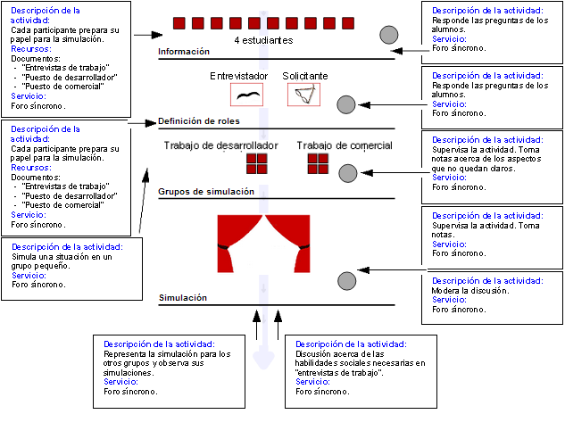

Diseño de Aprendizaje basado en el CLFP Simulación:
Habilidades Sociales "Entrevista de trabajo"
Dos individuos hacen el papel de entrevistadores y otros dos hacen el
papel de solicitantes del puesto de trabajo. Un entrevistador y en
solicitante interpretan una "entrevista para un puesto de trabajo de
desarrollador", mientras que la otra pareja interpreta una "entrevista
para un puesto de trabajo de comercial". Previamente, cada persona
consulta información general acerca de las entrevistas de
trabajo y prepara su papel de acuerdo con la entrevista que vaya a
realizar. Cada pareja prepara una simulación utilizando un foro
síncrono. A continuación cada grupo realiza la
simluación y observa la del otro grupo. Finalmente, se debate
acerca de las habilidades sociales requeridas en este tipo de
sutiaciones. El profesor modera la discusión y puede responder
cualquier pregunta que pueda surgir.

Objetivos
- Aprender las habilidades sociales necesarias para las
entrevistas de trabajo.
- Aprender acerca de la importancia general de las habilidades
sociales.
Prerrequisitos
- (Cualquier requisito importante).